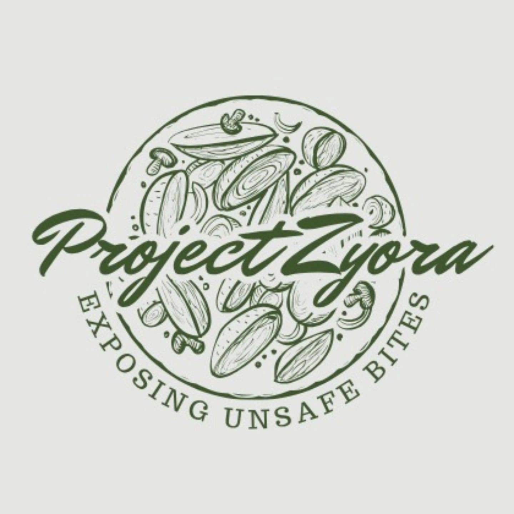
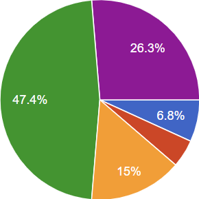
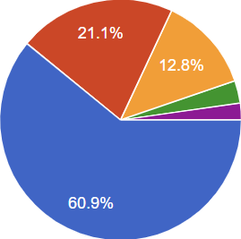
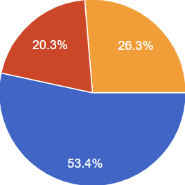

Zyora Nova
Home
Interviews
Surveys
Solutions
Team
Community Insights
1. Do you agree that unsafe food processing exists in Pakistan?

Breakdown:
Strongly Agree (26.3%), Agree (47.4%), Neutral (15%), Disagree (4.5%), Strongly Disagree (6.8%)
2. How serious do you think is the issue of unsafe food processing?

Breakdown:
Very serious (60.9%), Quite serious (21.1%), Neutral (12.8%), Not very serious (3%), Not serious (2.3%)
3. Have you ever been affected by unsafe processed food?

Breakdown:
Yes (53.4%), Maybe (26.3%), No (20.3%)